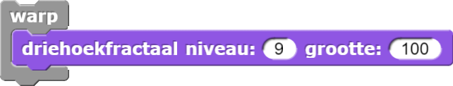
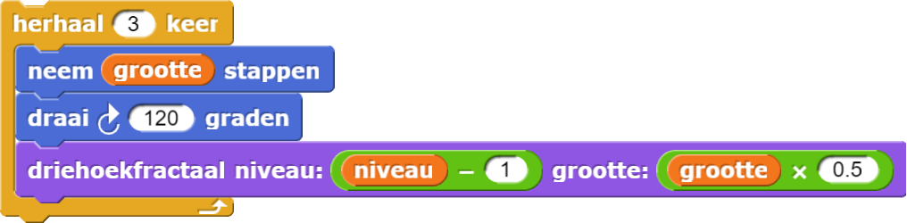
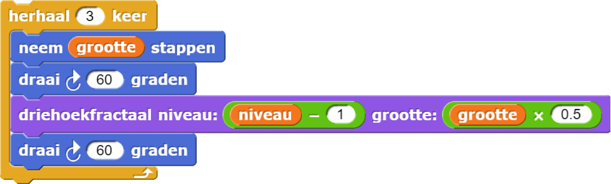

Driehoekfractaal

-
Schrijf eerst een blok dat grootte als invoer heeft en een gelijkhoekige driehoek
tekent.

De Driehoek tot een Fractaal Laten Groeien.
driehoek is het basis geval. Je kan het aanpassen, of een nieuw blok maken met invoer voor
niveau en grootte op dezelfde manier als boom :
Als het niveau 1 is, moet alleen de driehoek te zien zijn:

Anders ontstaat er een afstammeling aan het einde van elke kant van de voorouder. Op niveau 2 moet het er zo
uit zien:

En op niveau 3 moet je dit te zien krijgen:

-
 Schrijf de code voor
Schrijf de code voor driehoekfractaal. - Gebruik het
warpblok (om tijd te besparen) en probeer dan een hoog getal voor het niveau, zoals 8 of 9.
warp blok (in het gele Besturenpalet) voert het script dat erin staat sneller
uit doordat het geen enkel ander script laat lopen of het speelveld laat updaten totdat het
script in het warpblok klaar is. 
Om de voorouder driehoek te laten tekenen moet de sprite 120° draaien tussen de zijden. Voor de fractaal die je zojuist maakte, gebeurde dat draaien na het tekenen van de nakomeling, maar je zou ook vóór de recursieve aanroep kunnen draaien, of je kan de draai splitsen met een deel voor en een deel na de recursieve aanroep.
-
Probeer een paar aanpassingen zoals deze:
 
- Gebruik
herhaalom een animatie te maken die door verschillende draaisets wisselt (dat houdt in: 0° en 120°, daarna 1° en 119°, dan 2° en 118°, enz.). - Experimenteer met de schalingsfactor voor de grootte van de recursieve aanroepen. Een paar interessante waarden zijn \frac{ 1 }{3} en \frac{ 1 }{\sqrt{3}}.